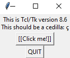

Введение
О TKinter
Tkinter (от англ. Tk interface) — кросс-платформенная графическая библиотека на основе средств Tk. Под графическим интерфейсом пользователя (GUI) подразумеваются все те окна, кнопки, текстовые поля для ввода, скроллеры, списки, радиокнопки, флажки и др., которые вы видите на экране, открывая то или иное приложение. Через них вы взаимодействуете с программой и управляете ею. Все эти элементы интерфейса вместе будем называть виджетами (widgets).
В настоящее время почти все приложения, которые создаются для конечного пользователя, имеют GUI. Редкие программы, подразумевающие взаимодействие с человеком, остаются консольными.
Существует множество библиотек GUI. Tk далеко не самая популярная, хотя с ее использованием написано не мало проектов. Однако по ряду причин она была выбрана для Python по-умолчанию. Установочный файл Питона обычно уже включает пакет tkinter в составе стандартной библиотеки наряду с другими модулями.
Не вдаваясь в подробности, Tkinter можно охарактеризовать как переводчик с языка Python на язык Tcl. Вы пишете программу на Python, а код модуля tkinter у вас за спиной переводит ваши инструкции на язык Tcl, который понимает библиотека Tk.
Приложения с графическим интерфейсом пользователя событийно-ориентированные. Вы уже должны иметь представление о структурном и желательно объектно-ориентированном программировании. Событийно-ориентированное ориентировано на события. То есть та или иная часть программного кода начинает выполняться лишь тогда, когда случается то или иное событие.
Событийно-ориентированное программирование базируется на объектно-ориентированном и структурном. Даже если мы не создаем собственных классов и объектов, то все-равно ими пользуемся. Все виджеты – объекты, порожденные встроенными классами. События бывают разными. Сработал временной фактор, кто-то кликнул мышкой или нажал Enter, начал вводить текст, переключил радиокнопки, прокрутил страницу вниз и т. д. Когда случается что-то подобное, то, если был создан соответствующий обработчик, происходит срабатывание определенной части программы, что приводит к какому-либо результату.
Структуру приложения, примитивы и прочее мы уже рассмотрим в следующих главах, а пока что, следующая задача. Tkinter импортируется стандартно для модуля Python любым из способов:
import tkinter, from tkinter import *, import tkinter as tk
Можно импортировать отдельные классы, что делается редко. В данном курсе будет в основном использоваться
from tkinter import *
Задание
С помощью функции _test проверьте корректность работы TKinter, появится следующее окно:

ВАЖНО: Для этого задания импортируйте модуль tkinter только с помощью
import tkinter